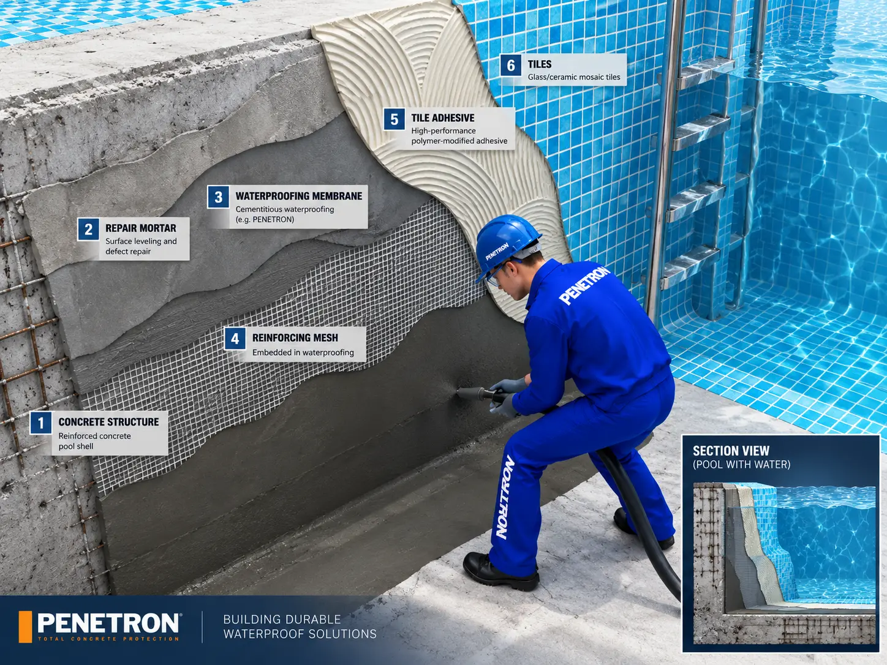
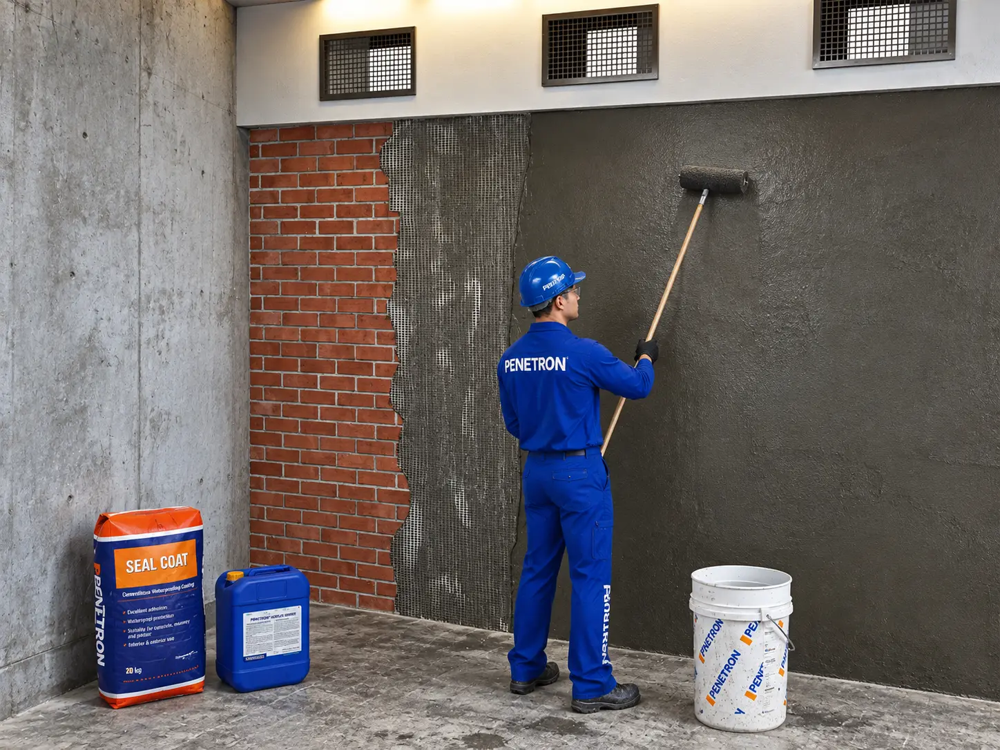
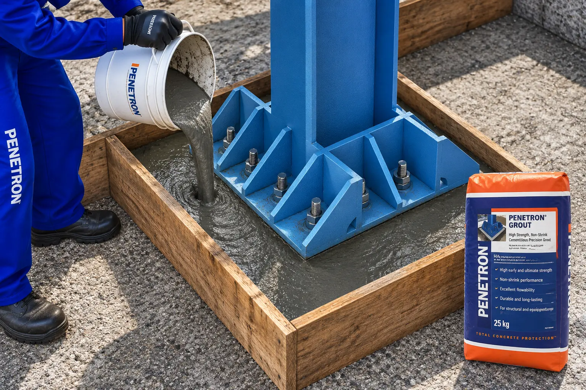

PENETRON · CONSIGNED PROJECT · 2011
Product
Visualization
Technical product renders translating specialist construction processes into immediate, readable scenes for labels and catalogue communication.

VISUAL APPROACH
Each image connects the product, installer and material performance in one frame. Clear staging, cutaway geometry and controlled color help non-specialist viewers understand where and how each system is applied.

